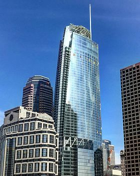
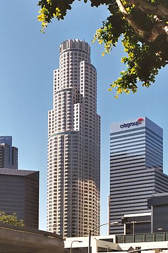
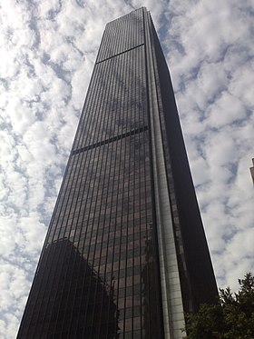

<!DOCTYPE html>
<!DOCTYPE html>
<html lang="en"></html>
<head> 
    <meta charset="UTF-8">
<meta http-equiv="X-UA-Compatible" content="IE=edge">
<meta name="viewport" content="width=device-width, initial-scale=1.0">
<title>Monuments</title>
</head>
<body>
    <header>
        <h1>Main monuments of Los Angeles, South California</h1>
    </header>
    <article>
        <main>
            <ul>
                <li><a href="index.html">Main Page</a></li>
                <li><a href="people.html">People</a></li>
                <li><a href="history.html">History</a></li>
                <li><a href="toponomy.html">Toponomy</a></li>
            </ul>
            <p>The following monuments are some of the most important in the city.</p>
            <p>The information used in this page has been useful from <a href="https://es.wikipedia.org/wiki/Los_%C3%81ngeles#Paisaje_urbano">wikipedia</a>.</p>
            <p>This information was publicated 19/10/2022</p>
            <h2>Wilshire Grand Center</h2>
            <div style="text-align: justify ;">
            <p>Wilshire Grand Center is a 335 m tall skyscraper located at 930 Wilshire Boulevard, 
                at the intersection with Figueroa Street, in the Financial District of downtown 
                Los Angeles, United States. Crowned by a decorative spire, the Wilshire Grand Center 
                became the tallest building in Los Angeles and the West Coast of the United States with 
                its opening in June 2017. The tower features a sky lobby, sky lounge, and infinity pools 
                on the highest floors that offer views of the Los Angeles Basin.<br>
                Construction began in 2014. The complex was originally conceived as two towers, 
                but was eventually realized as a single 73-story tower containing a 900-room hotel, 
                shops, restaurants, and offices.<br>
                The current version of the Wilshire Grand Center was designed by AC Martin Architects. 
                A distinctive feature of the building is its sail-shaped top that is illuminated by LED lights
                at night, emulating the style of many towers located in East Asian megacities. The tower 
                leads part of a new lighting and signage district. stretching along the Figueroa Corridor to L.A. Live.
            </p>
            </div>
            <div style="text-align: center;">
                <figure>
                    
                    <figcaption>Image of <strong>Wilshire Grand Center</strong>  from the street</figcaption>
                </figure>
            </div>
            <br>
            <br>
            <br>
            <h2>US Bank Tower</h2>
            <div style="text-align: justify ;">
            <p>The US Bank Tower, also called the Library Tower, is a skyscraper located in downtown
                Los Angeles, California. With its 310 meters high and 73 floors, it became what is 
                still the second tallest skyscraper in the city and on the entire west coast of the 
                United States, being only surpassed by the Wilshire Grand Tower. Its construction was 
                carried out between 1988 and 1989. It was designed by Thomas Boada. His profile is one 
                of those responsible for the city of Los Angeles having such a distinctive skyline.<br>
                It is an extremely projected building in most Hollywood movies themed in the city of Los Angeles, California.<br>
                The original plan for the September 11, 2001 attacks was to hijack 12 planes, one of which 
                was to hit the U.S. Bank Tower. But the operation was overwhelming, since there were too 
                many targets, so the targets were reduced to 5 and one of the ones they removed was the U.S. Bank Tower.
                </p>
            </div>
            <div style="text-align: center;">
                <figure>
                    
                    <figcaption>Image of the<strong> US Bank Tower</strong>  from the street</figcaption>
                </figure>
            </div>
            <br>
            <br>
            <br>
            <h2>Aon Center</h2>
            <div style="text-align: justify ;">
            <p>Aon Center is a 62-story, 262-meter (858-foot) skyscraper in Los Angeles, United States. Its construction ended in 1973.
                It was designed by Charles Luckman. Excavation at the site began in the late 1970s, 
                and the tower was completed in 1973. The black rectangular building with white trim 
                is very slim for a skyscraper in a seismically active area. It is the third tallest 
                building in Los Angeles, the third tallest in California, and the 32nd tallest in 
                the United States. The logo of the Aon Corporation, its tenant, is displayed at the 
                top in red.<br>
                Aon Center was originally called the United California Bank Building from its 
                completion in 1973 until 1981, when it became the First Interstate Tower. It was 
                the tallest building west of the Mississippi River when it was built, until 1982 
                when it was surpassed by the Texas Trade Tower in Houston. Upon its completion in 
                1973, the building was the tallest in the world outside of New York and Chicago. 
                It remained the tallest building in Los Angeles until 1989, when the Library Tower 
                (now the U.S. Bank Tower) was completed. Between 1998 and 2005, there were no logos
                on the building.
            </p>
            </div> 
            <div style="text-align: center;">
                <figure>
                    
                    <figcaption>Image of the<strong>Aon Center</strong></figcaption>
                </figure>
            </div> 
            <div>
                <p>All of the images used was extracted from wikipedia: <a href="https://es.wikipedia.org/wiki/Los_%C3%81ngeles#Paisaje_urbano"> https://es.wikipedia.org/wiki/Los_%C3%81ngeles#Paisaje_urbano</a></p>
            </div>
        </main>
    </article>
    <footer>This page was creater for <em>Martin Vazquez Couselo</em>.</footer>
</body>